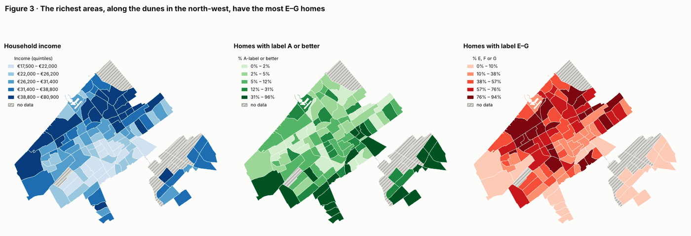
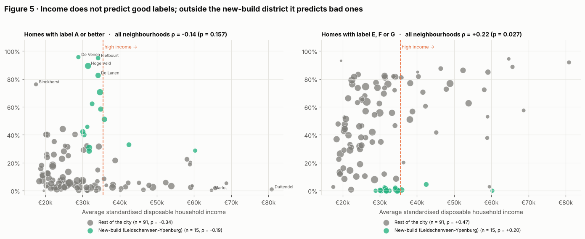
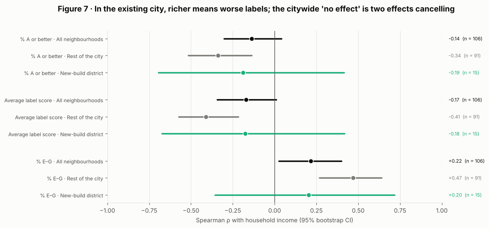
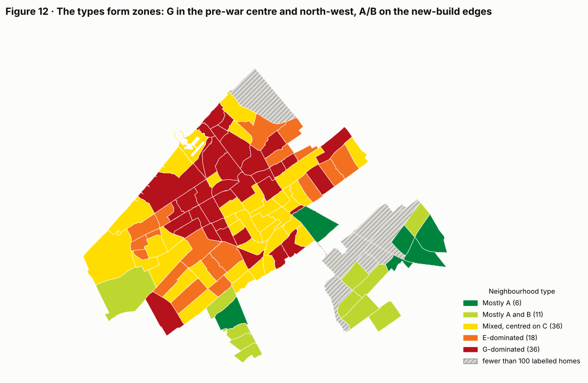

Do richer neighbourhoods live in greener homes?
Household income, energy labels and neighbourhood types across the 114 neighbourhoods of The Hague, with spatial statistics and K-means clustering.
- Data
- Den Haag in Cijfers: energy labels and income per neighbourhood
- Tools
- geopandas, scikit-learn, SciPy, matplotlib
- Type
- TU Delft coursework (EPA-1316), extended
The question
Do neighbourhoods in The Hague with higher household incomes have more energy-efficient homes?
Short answer: no, and in the older city it's the other way round.
The data
An export from Den Haag in Cijfers with the number of homes per energy label (A++ to G) and the average standardised disposable income per neighbourhood, joined to the boundaries of all 114 neighbourhoods. It covers 261,797 homes with a registered label. Two traps came up while checking the data: the export lists label G before F, and its last row ("Unknown") isn't a neighbourhood at all. I also left out areas with fewer than 100 labelled homes, because one home with an A-label makes a neighbourhood look 100% A.
Income and labels on the map
Putting the maps side by side, the income map looks like the map of bad labels: the wealthy dune-side areas in the north-west are also where most homes are E, F or G. The A-labels sit somewhere else entirely, mainly in the new-build east.


Testing the hypothesis
Across the whole city, income has no clear link with the share of A-label homes (Spearman ρ = −0.14, p = 0.16). That near-zero result hides two opposite patterns. Outside the new-build district of Leidschenveen-Ypenburg, richer neighbourhoods have clearly worse labels (ρ = +0.47 with the share of E–G homes). Inside it, everyone lives in recent housing, so income makes little difference.




The high-income quarter of neighbourhoods has a median of 71% E–G homes, against 40% for the rest. Labels follow the age of the housing, not the income of the people living in it.
Neighbourhood types
K-means clustering on the label mix finds five stable types, from "mostly A" to "G-dominated". K-means never saw the map, yet the types form clear zones: half of all neighbouring pairs share a type, against 26% by chance. The G-dominated type covers the pre-war centre and north-west, including most of the city's wealthiest areas.


Why it matters
The usual worry is that poor households live in poorly insulated homes. In The Hague, the largest stock of E–G homes is in wealthy neighbourhoods such as Marlot, Duttendel and Vogelwijk (86–94% E–G), where owners can pay for insulation themselves.
What to keep in mind
- The new-build flag is only a rough stand-in for building age; the average construction year per neighbourhood would be a better test.
- Neighbourhoods strongly resemble their neighbours (Moran's I ≈ 0.6), so the p-values are somewhat optimistic.